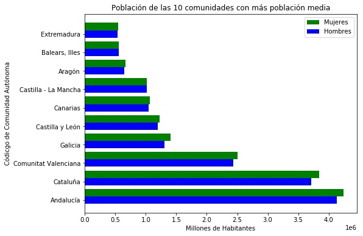

| | 2017 | 2016 | 2015 | 2014 | 2013 | 2012 | 2011 | 2010 | 2017 | 2016 | 2015 | 2014 | 2013 | 2012 | 2011 | 2010 |
| | Hombres | Mujeres |
| 01 Andalucía | 4.133.835 | 4.139.194 | 4.144.532 | 4.148.701 | 4.170.654 | 4.180.285 | 4.169.634 | 4.144.856 | 4.245.985 | 4.248.913 | 4.254.511 | 4.253.604 | 4.269.646 | 4.269.700 | 4.254.468 | 4.226.119 |
| 02 Aragón | 645.895 | 647.206 | 652.687 | 656.964 | 669.987 | 671.898 | 671.286 | 673.177 | 662.855 | 661.357 | 665.160 | 668.421 | 677.163 | 677.569 | 675.007 | 673.918 |
| 03 Asturias, Principado de | 493.911 | 497.852 | 502.175 | 507.927 | 511.346 | 516.420 | 518.571 | 520.402 | 541.049 | 544.756 | 549.054 | 553.829 | 556.819 | 560.940 | 562.916 | 563.939 |
| 04 Balears, Illes | 554.925 | 550.682 | 549.678 | 549.801 | 554.603 | 560.091 | 557.577 | 555.204 | 561.074 | 556.538 | 554.801 | 553.641 | 557.071 | 559.348 | 555.537 | 550.845 |
| 05 Canarias | 1.045.113 | 1.042.838 | 1.043.203 | 1.046.373 | 1.055.302 | 1.056.240 | 1.061.591 | 1.058.706 | 1.063.008 | 1.059.086 | 1.057.103 | 1.058.442 | 1.063.377 | 1.062.104 | 1.065.178 | 1.059.813 |
| 06 Cantabria | 281.808 | 282.988 | 284.788 | 286.782 | 288.643 | 289.999 | 289.872 | 289.931 | 298.487 | 299.218 | 300.391 | 301.874 | 303.245 | 303.862 | 303.249 | 302.319 |
| 07 Castilla y León | 1.195.251 | 1.206.775 | 1.219.616 | 1.232.250 | 1.246.377 | 1.261.141 | 1.267.671 | 1.268.860 | 1.230.550 | 1.240.744 | 1.252.436 | 1.262.540 | 1.273.498 | 1.284.937 | 1.290.792 | 1.290.655 |
| 08 Castilla - La Mancha | 1.016.761 | 1.022.722 | 1.032.673 | 1.043.880 | 1.056.960 | 1.069.648 | 1.066.598 | 1.059.149 | 1.014.718 | 1.018.909 | 1.026.518 | 1.034.731 | 1.044.038 | 1.052.240 | 1.048.736 | 1.039.224 |
| 09 Cataluña | 3.710.200 | 3.697.368 | 3.691.745 | 3.701.740 | 3.725.318 | 3.741.628 | 3.732.196 | 3.724.515 | 3.845.630 | 3.825.228 | 3.816.361 | 3.817.163 | 3.828.332 | 3.829.280 | 3.807.422 | 3.787.866 |
| 10 Comunitat Valenciana | 2.436.203 | 2.448.748 | 2.460.805 | 2.475.081 | 2.534.539 | 2.546.404 | 2.541.780 | 2.542.949 | 2.505.306 | 2.511.220 | 2.519.884 | 2.529.763 | 2.579.276 | 2.582.862 | 2.575.410 | 2.568.757 |
| 11 Extremadura | 535.060 | 539.239 | 542.078 | 545.616 | 548.054 | 550.324 | 550.864 | 549.721 | 544.860 | 548.539 | 550.919 | 554.016 | 555.950 | 557.806 | 558.503 | 557.499 |
| 12 Galicia | 1.304.392 | 1.309.809 | 1.317.054 | 1.325.657 | 1.335.122 | 1.343.328 | 1.349.591 | 1.350.547 | 1.403.947 | 1.408.716 | 1.415.293 | 1.423.038 | 1.430.818 | 1.438.170 | 1.445.831 | 1.447.106 |
